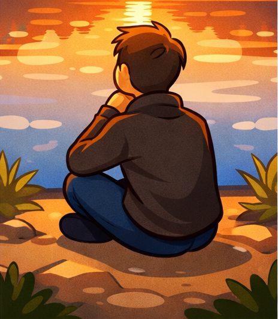

As the Day Begins... So Often the Rest of the Day Passes: The Power of a Purposeful Morning
There is an ancient piece of wisdom that resonates through cultures and ages: As the day begins, so often the rest of the day passes. This isn’t just a catchy phrase; it’s a psychological and spiritual reality that governs the productivity and peace of our lives. In the hustle of the modern world, many of us wake up to the blaring sound of an alarm, immediately reaching for our phones to scroll through stressful news or social media. This chaotic start sets a tone of reactivity and anxiety that follows us until we close our eyes at night. However, Islamic tradition and true Quranic success offer a different path—a path of Barakah (blessing) and discipline.
1. The Spiritual Anchor of Fajr
In Islam, the day doesn’t start when the world wakes up; it starts when the darkness still clings to the sky, with the Fajr prayer. This pre-dawn connection with the Creator acts as a spiritual anchor. When you stand in prayer while others are sleeping, you are declaring that your purpose is higher than your comfort. This early commitment builds the patience and character required to handle any challenges the day may throw at you. The importance of the Quran in the morning is highlighted by the Prophet (PBUH) who said that the recitation at Fajr is witnessed by the angels.
Saeed Quran Academy understands this foundational principle. Our classes are designed to encourage daily recitation, helping students of all ages build a routine that starts with the Word of Allah.

2. Psychology and Productivity: The Morning Momentum
Psychologically, the human brain is most receptive and focused in the early hours. By dedicating this time to learning and spiritual growth, you create a "momentum of excellence." If your first hour is disciplined, your second hour is likely to be productive. If your first hour is lazy, your entire day becomes an uphill battle. This is why online Quran learning is so effective—it allows you to incorporate sacred knowledge into your morning before the world begins to demand your attention. Following online study tips can help you maintain this focus.
3. Building Habits for our Children
As parents, the most valuable gift we can give our children is a routine built on sacred foundations. During the prime developmental years, children are like sponges. If they see their parents valuing the morning hours and teaching Salah early, they develop a resilience that lasts a lifetime. In Western societies, where the morning rush is often devoid of spirituality, making time for the Quran is a revolutionary act of Islamic upbringing.
4. The Science of the "Barakah" Hour
Modern science now confirms what the Prophet (PBUH) taught 1400 years ago when he prayed, "O Allah, bless my Ummah in its early hours." The connection between Quran and Science is profound; early rising regulates circadian rhythms and provides a natural boost to mood and cognitivity. By mastering Tajweed in these quiet hours, the vibration of the Quranic sounds clarifies the mind like nothing else.
Saeed Quran Academy: Your Partner in a Better Morning
Our academy provides the structure you need to make your mornings meaningful. With our global community, we offer classes that fit your time zone, ensuring that your day begins with the light of the Quran. The benefits of Hifz and regular learning are doubled when practiced with morning discipline.
Conclusion: The Choice is Yours
Tomorrow the sun will rise again. How will you meet it? Will you wait for the day to happen to you, or will you happen to the day? Remember, as the day begins... so often the rest of the day passes. Choose the Light. Choose the Quran. Choose a life of Barakah.
Start Your Journey of Barakah Today!
Join Saeed Quran Academy and let the light of the Quran define your days. Register for a free trial class below.